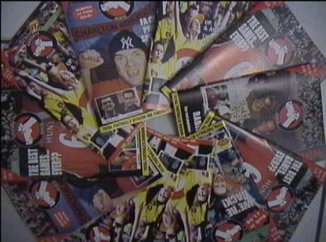
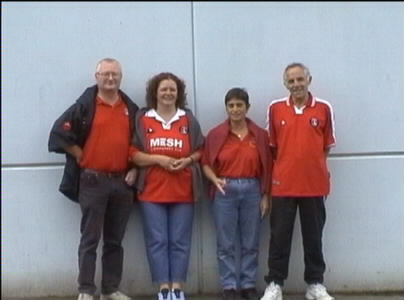
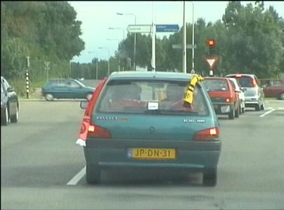
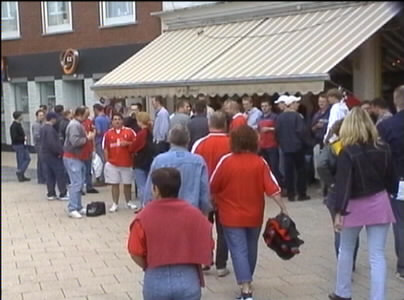
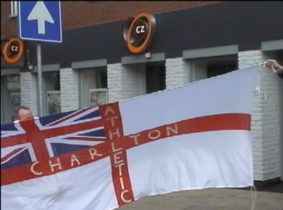
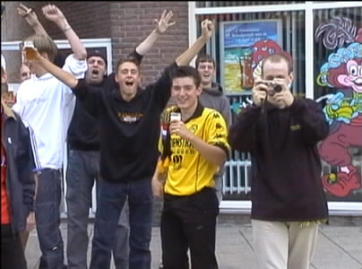
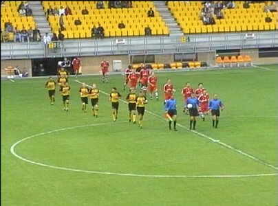
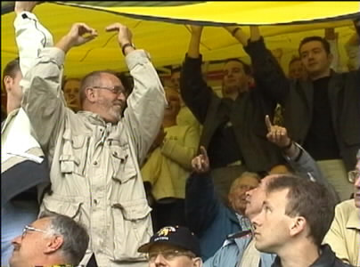
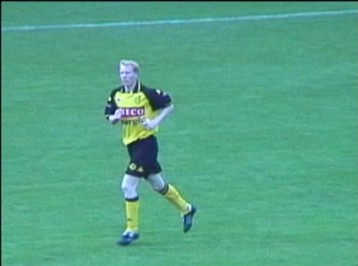

|
Roda JC - Charlton Athletic (2-1) 10 augustus 2001 |

Vandaag speelde Roda zijn laatste testmatch tegen
Charlton Athletic, nummer 9 van de Engelse Premier League

Een aantal gasten kreeg een rondleiding op Kaalheide.

Beide sjaals wapperen gebroederlijk uit de 106 van Danniëlle.

Eerst even naar de Sjtomerij, "the dry-cleaning pub".

Een van de Engelse vlaggen.

Hier heeft Ramon nog zijn eigen shirt, BAM maakt foto 185.

In een matig bezet stadion betreden de spelers het veld.

In Z16 wordt het Eneco-shirt over het publiek getrokken.

Lachambre, de nieuwe (?) linksback maakte 'n goede indruk.